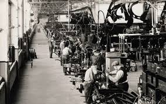

Revolusi Industri pertama dimulai pada abad ke-18, sekitar tahun 1760, di Inggris. Penemuan mesin uap oleh James Watt memicu perubahan besar dalam produksi2. Mesin uap mempercepat proses produksi yang sebelumnya dilakukan secara manual, meningkatkan efisiensi di berbagai sektor seperti tekstil dan pertambangan.
Revolusi Industri Pertama (1760-1840)

Revolusi Industri Kedua (1870-1914)

Revolusi Industri Kedua melihat perkembangan teknologi seperti listrik, bahan bakar fosil, dan mesin listrik. Pabrik-pabrik besar muncul, dan produksi massal menjadi lebih umum. Transportasi juga berkembang dengan adanya kereta api dan kapal uap.
Revolusi Industri Ketiga (1940-2000)

Revolusi Industri Ketiga ditandai oleh perkembangan teknologi informasi dan komunikasi (TIK). Komputer, internet, dan teknologi otomatisasi memungkinkan efisiensi dan produktivitas yang lebih tinggi. Industri mulai berorientasi pada teknologi dan informasi.
Revolusi Industri Keempat (2010-sekarang)

Revolusi Industri Keempat, atau Industri 4.0, melibatkan integrasi teknologi canggih seperti otomatisasi, kewaspadaan, dan analitik (AI), Internet of Things (IoT), dan teknologi blockchain. Industri 4.0 mengubah cara kita berinteraksi dengan teknologi dan memungkinkan otomatisasi yang lebih lanjut serta pengambilan keputusan berbasis data.